AnyPortrait > Manual > Rigging in various cases
Rigging in various cases
1.2.2
Rigging is a task that needs to be improved in quality through numerous tests and modifications.
Because the work requires experience and know-how of experts, you can get information on rigging through various forums.
This page covers how to rig in some cases for those who are having trouble rigging.
It also explains in more detail how to use the functions of AnyPortrait for each case.
Differences in Position of Joints
A joint, with two or more bones, is the most important part of the rigging.
This is because the way the mesh is deformed depends on how the weight is set.
In this point, what is as important as the distribution of weights is the position of the joint.
Whether the bones are connected at the center of the image or the bones at the edges is a matter of importance.
There isn't the exact right answer, and you'll have to decide for yourself case by case.

First, the joint is located in the center of the image.
This case is suitable when the joints move inward and outward.
The inner and outer sides of the joints deform uniformly.
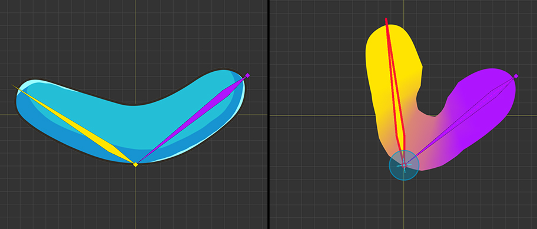
The second case is when the joint is located outside of the image.
While the inside of the joint is quite largely deformed, the outside is relatively less deformed.
Apparently this method is very deformable, but many joints in humans and animals (arms, knees, fingers, etc.) are actually this way.
(Check your bone location by touching your finger and knee.)
Constructing joints in this way allows you to represent the inflation and fold of flesh when the joint is folded.
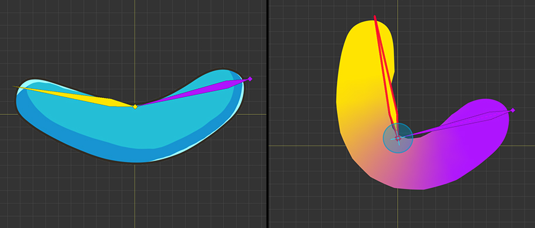
The last case is when the joint is located inside the image.
The deformation of the inside of the joint is minimal, and the deformation of the outside is large.
This is useful when you want to avoid reducing the volume of the image because the image is compressed in a small area.
In the case of the image of the person in the side, this method may be used at the junction of the pelvis and legs.
In the three cases above, the distribution of weights was set to be smooth.
However, in the image of humans or animals, the motion of the joints is complicated, requiring some more manually modification.
You can modify the above cases as follows:

The weight has been modified like the image above.
You can see that the weight of the inner part of the joint changes more rapidly.
You can modify the above using fewer "Blend" function and increasing or decreasing the weight manually.
When you modify these weights, you can see how the results look different in the image below.
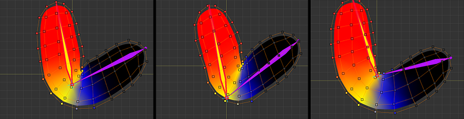
As in the previous description, let's compare how each one works based on the position of the joint.
1) When the joint is located in the center
: The inner image of the joint appears slightly folded.
This is good method for most joints of characters such as humans and animals.
2) When the joint is located outside
: The inside of the joint is so deformed that the image may look a bit strange.
In the case of human or animal joints, this approach is quite effective when the joints are folded, when the skin is slightly swollen and folded (arms, knees, fingers, etc.).
You need to modify the vertex Z-Depth to prevent the mesh from displaying strangely. (Related page)
3) When the joint is located inside
: The results do not change much even if the weight distribution method has changed.
A series of bones
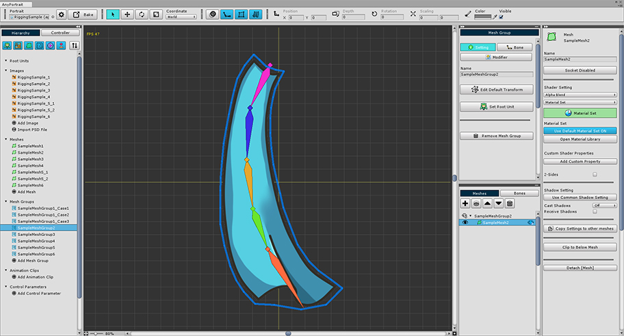
In some cases, such as ropes, shawls, or long hair, you may need to do the rigging several consecutive bones.
In particular, it is not easy to assign weights unless the object's movement is so flexible that joints are not formed at specific locations.
In this case, using the "Blend" function is quite effective.
Let's do the rigging as follows.

Select the first bone and vertices to start with.
You can select enough vertices near the next bone.

Select the next bone and vertices and set their weights.
Assign “1” as the weight value in every step.
It is very cumbersome if you assign weights manually from this step.
And also it is hard to get good results.
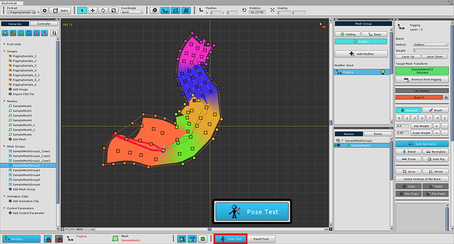
Let's check the rigging result using the "Pose Test" function.
Naturally, the weight will look strange as above because only 1 is entered for each bone.

Let's use the "Blend" feature.
Modify the rigging sequentially from the first bone.
(1) Select the vertices. This time, select a fairly wide range of vertices.
(2) Select the first bone.
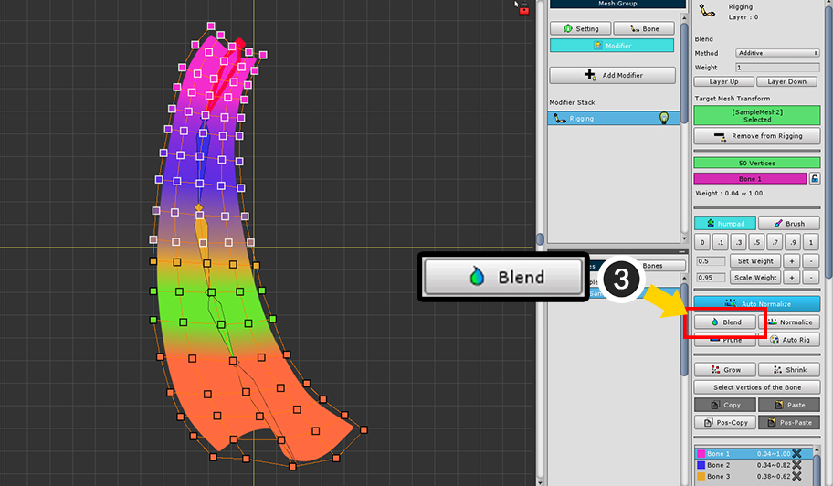
(3) Press the Blend button several times.
The weights are evenly distributed as if you had applied a blur effect.
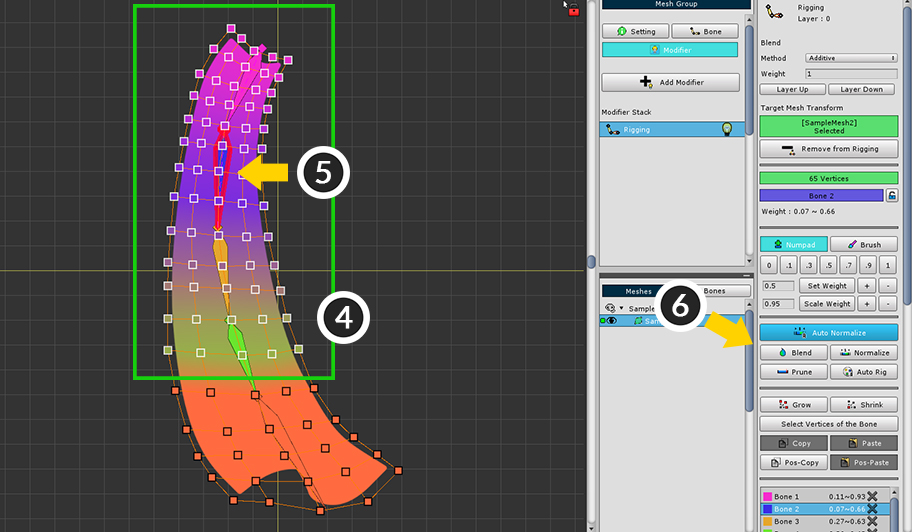
Do the same for the second bone.
(4) Select the vertices. Again, select a wide range of vertices.
(5) Select the second bone.
(6) Press the Blend button several times.


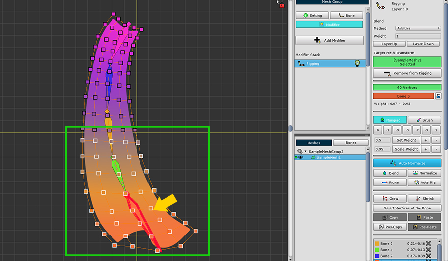
Use the Blend function, in the same way, continuously to the last bone.
When you do this, the weights appear to be fairly evenly distributed.
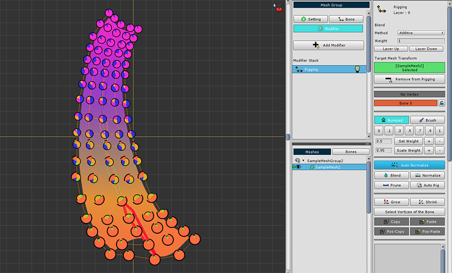
If you look at the weights, the weights on the bones at both ends are quite large, but the weights on the middle bones are small.
Less weight on the middle bones gives a pretty flexible shape.
If necessary, increase or decrease the weight or adjust the number of times the Blend is applied.
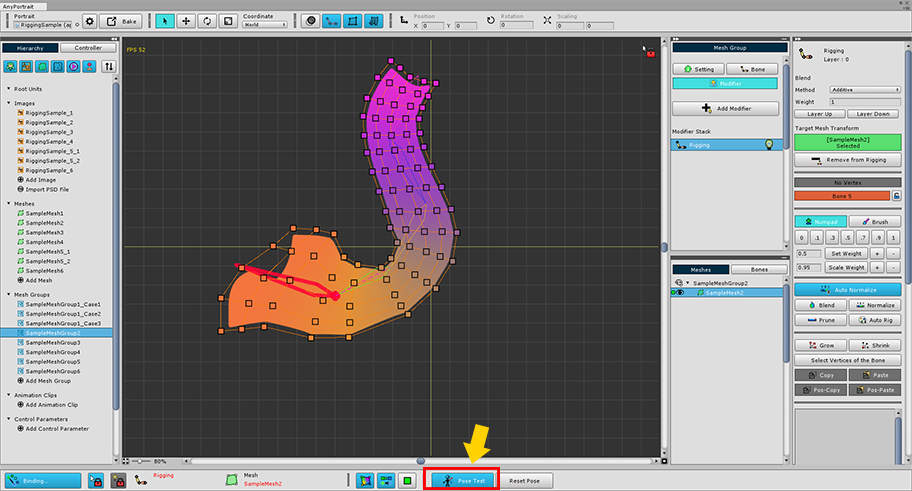
Turn on the Pose test again and you will see the mesh deform naturally with complex joint movements.
Brush mode

AnyPortrait's Brush mode lets you set weights with the mouse.
This time, we will cover an example consisting of two large bones and two small ones.
In this example, when both ears to two small bones are rigged, it is quite handy using Brush mode.
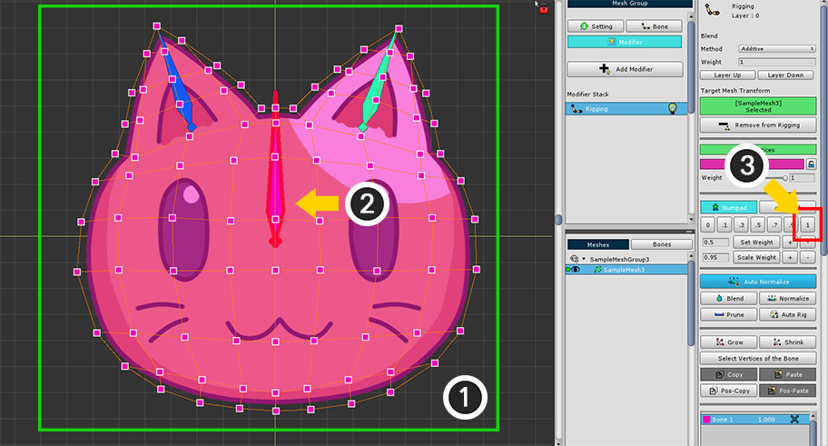
(1) Select all vertices.
(2) Select the basic bone.
(3) Set the weight to 1.

(1) Select Brush tab and brush tools appear.
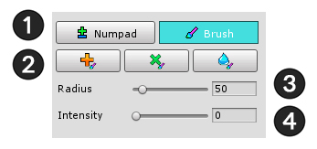
This is the UI in Brush mode.
1. Numpad tab, Brush tab
: Switch the brush mode and the number pad mode.
2. "Add", "Multiply", "Blur" brushes
: Brush that adds weights, Brush that multiplies weights, and Blur brush that smooths the surroundings and values.
Each shortcut key is J , K , L keys.
To exit brush mode just Right-click on it.
3. Radius
: The radius of the brush. You can increase or decrease the size by using the shortcut key [ and ] .
4. Intensity
: The intensity of the brush. You can increase or decrease the intensity with the shortcut keys < and > .
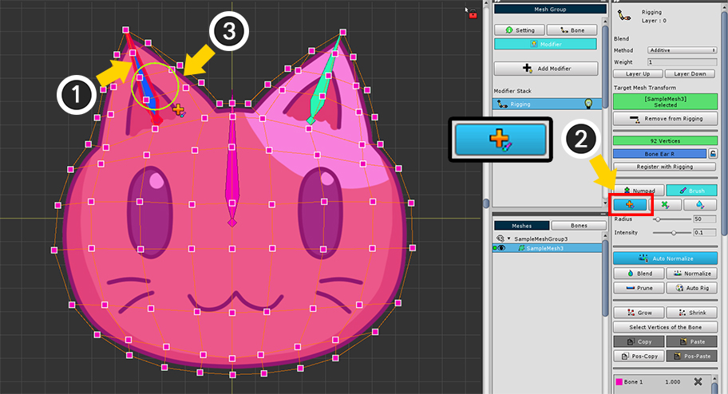
(1) Select the bone on the left. (Vertices must be selected.)
(2) Select the "Add" brush. (Shortcut: J )
(3) A circular brush will appear around the mouse.

(1) Increase the value of Radius. (Shortcut: ] )
(2) You can see the size of the brush increased.
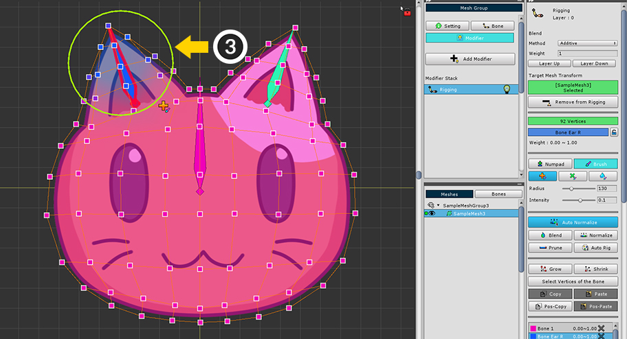
(3) If you rub with the mouse clicked, you can see the weight of the selected bone gradually increasing.

Do the same for the opposite bone.
(1) Right-click to turn off Brush mode, then select the small bone on the right with the vertex selected.
(2) Select the "Add" brush.
(3) Click and rub the mouse to increase the weight for the other ear.
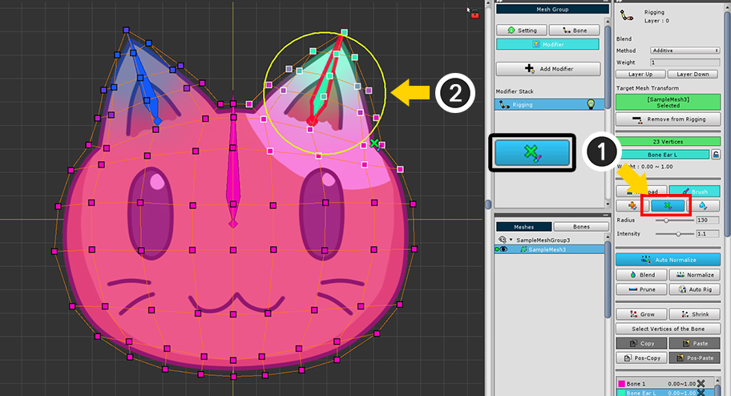
The "Multiply" brush allows you to edit the weight's value in detail.
(1) With the bones and vertices selected, select the "Multiply" brush.
(2) Rub the vertices with a brush and you will see the weight gradually increase or decrease by the ratio.

Using the "Blur" brush helps to create a smooth distribution of the weight values.
Similar to the function of Blend.
(1) With the bones and vertices selected, select the "Blur" brush.
(2) Rub the vertices with a brush and the weight will change smoothly with the surrounding vertices.
As a result, you can see that the weights are softly distributed.
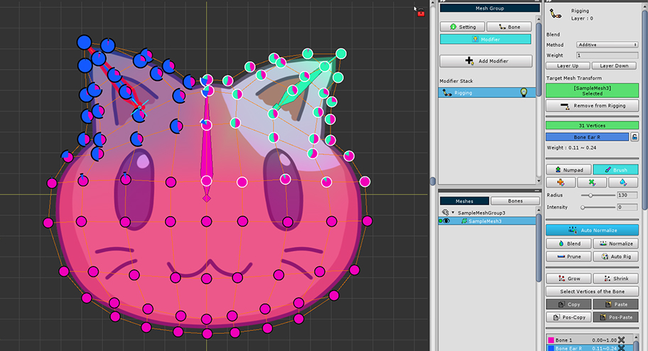
Let's check the rigging result through the pose test.
With the brush tool you can easily rig.
Lock function to prevent weights from changing
Rigging is very complicated in areas where more than two bones are connected.
The hardest part is that the results will vary depending on which bone you are rigging first.
Since the weight values are heavily influenced by the bones selected later, the results of the earlier work are likely to be distorted.
The "Lock function" added in v1.1.8 help to avoid this problem a bit.

This example shows three separate bones and a V-shaped image.
This can be a bit complicated as the center of the image needs to be rigging for three bones.
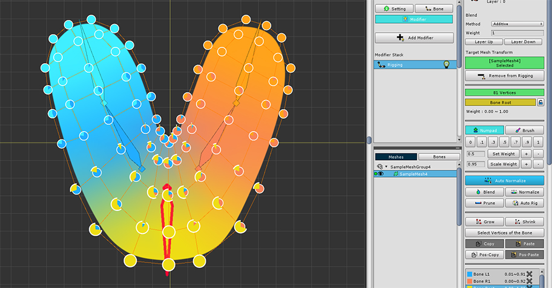
This is the result of a simple rigging.
As you can see, the weights of the vertices in the middle are complicatedly assigned by three bones.
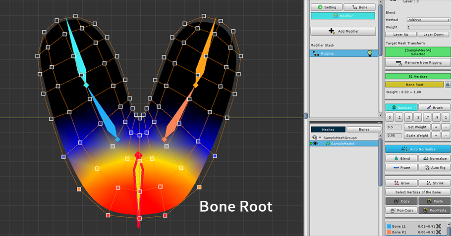
This is the weight distribution of "Bone Root" located below.
It is evenly distributed from left to right based on the lower part.


The weights for the left and right bones were similarly distributed.
Now let's increase the weight of "Bone R1".
At the same time, let's keep the weight of "Bone Root".
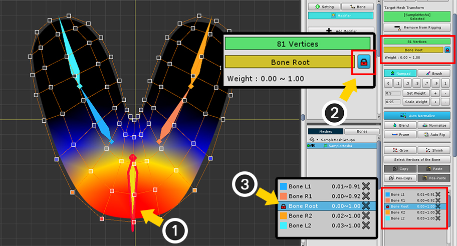
(1) Select bone to lock rigging weight value.
(2) Press the lock button.
(3) The selected bones are limited in weight editing for all vertices and can be checked by the icon in the bone rigging information list.
The lock feature has the following features:
1) When the edit mode is exited, all lock functions are released.
2) The lock function prevents the weight of a bone locked by “other bones” from being changed.
3) Even in the locked state, the weight is edited when its bone is selected for reason 2).
4) There may be a slight change in value by Blend or Normalize, but the change is not large.

Let's test the lock function.
(1) Select the right bone and a fairly wide range of vertices.
(2) The weight was increased by pressing the "+" button several.
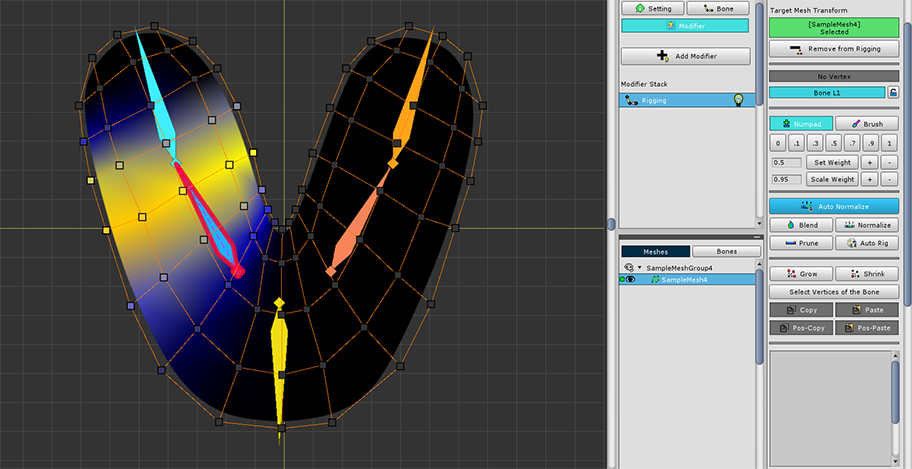

While the weight for the bone on the left is much reduced,
you can see that the weights for "Bone Root" which is applied the "Lock" function remain the same as before.
Copy rigging weights to overlapped meshes
Copying weight values is very useful when multiple meshes are overlapped.
Copying the weight value reduces unnecessary task for duplicating rigging weights and prevents awkward synchronized movement of overlapping meshes.
The previous "Copy" feature only supports copying and pasting the weight value of one vertex to another vertex.
However, with "position-based copying (Pos-Copy / Paste)" added in v1.1.8, you can copy rigging information from multiple vertices in batches to other vertices.

In this example, two meshes are overlapped.
The mesh of (2) is attached to the mesh of (1) like clothes or armor.

First, the vertices of the inner mesh are assigned weights.
Because of the large number of vertices and the smooth distribution of weights, resetting these weights equally on other meshes can be a daunting task.
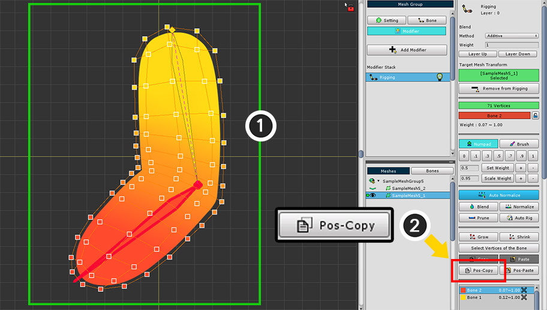
Let's copy the weights for these vertices.
(1) Select as many vertices as possible. In this example, all the vertices are selected.
(2) Press the Pos-Copy button.
Position-based copying interpolates and pastes the rigging weights of the target again based on the location of the saved vertices.
So the more vertices you copy, the more accurately you can paste the weights.

Now make the upper mesh visible.
(1) Select the mesh.
(2) Press the Add to Rigging button to add to the rigging modifier.
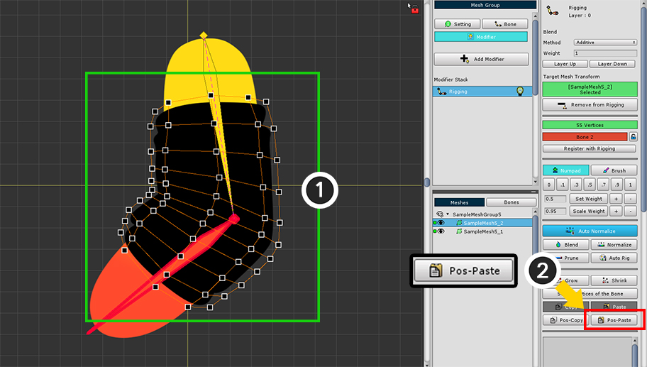
(1) Select all vertices.
(2) Press the Pos-Paste button to paste the saved rigging weights.

Rigging weights have been copied to all vertices.
You can see that the weights are distributed almost identically to the source mesh.
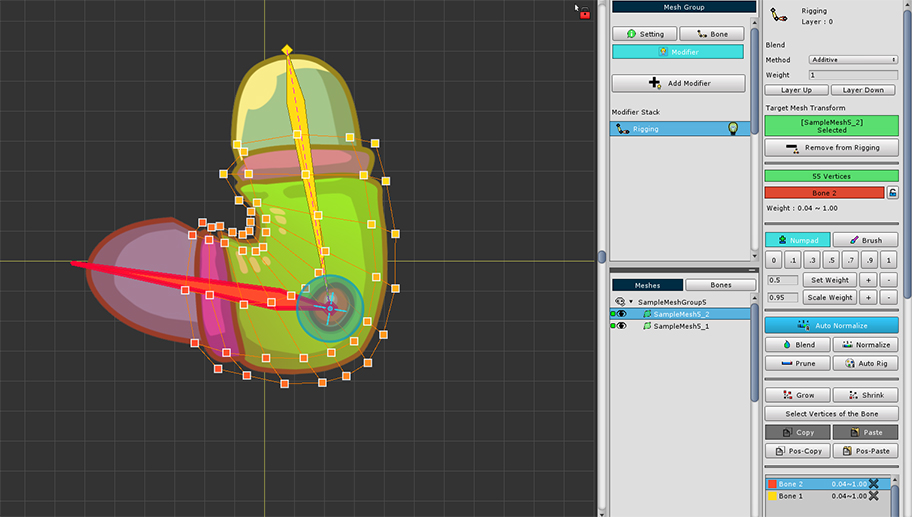
If you move the bone with the Pose Test feature, you will see the two meshes moving in sync.
Auto Rig
The Auto Rig function allows you to automatically set rigging weights on selected vertices.
This feature has been greatly improved in v1.1.8 and has been developed as a fairly convenient and powerful feature.
Auto Rig has the following features:
- The weights are smoothly distributed between the jointed bones. In the other hands, the weights are distributed somewhat discretely among the bones that are not directly connected to each other.
- Auto Rig is processed only for the selected vertices.
- The range to which the bone's weight is applied is determined automatically according to the distribution of vertices, and the unselected vertices are also referred to the calculation.
- If the selected vertices already have rigging weights, the bone's weighting range is changed and can be calculated more accurately.
The following example shows how to use the Auto Rig function.

In the example above, let's use the Auto Rig function to easily rig.

(1) Select the vertices. In this example, all vertices are selected.

(1) Press the Auto Rig button.
(2) The weight is automatically assigned to the selected vertices.
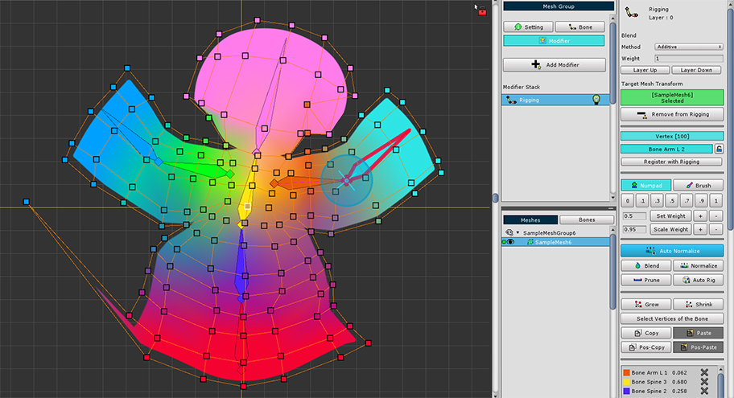
Let's use the Pose Test to see if the rigging is working.
Although the bones are complex, they are overall well rigging.
However, it seems that some vertices' rigging is set up strangely.
Take advantage of the Auto Rig feature to reduce errors like the above image and to make the rigging task efficient.

Return to the initial state and start rigging again.
Let's use the following property among the Auto Rig characteristics described above.
"- If the selected vertices already have rigging weights, the bone's weighting range is changed and can be calculated more accurately."
This property makes the results of Auto Rig more accurate.
(1) Select the vertices of the main part and the "nearest bone".
(2) Assign the weight to "1".
You don't need to do this for all bones, just for the vertices and bones that will cause errors.
These guided tasks do not have to be precise.

Press the Auto Rig button again.
Similar to the above, you can see that the rigging is done automatically.
Let's see if the results really improved.

Let's move the bones using the Pose Test to check the rigging results.
You can see that the rigging is more natural and less awkward than before.
Auto Rig function is used to increase the efficiency of rigging.
Afterward, it is recommended to further improve the quality of the rigging with additional modification.
Selecting Bones as the target of Auto Rig
The Auto Rig function calculates rigging for all bones.
As a result, sometimes unnecessary bones are linked with vertices.
By manually selecting the bones to which the Auto Rig function will be applied, you can avoid this problem and rigging more accurately and quickly.
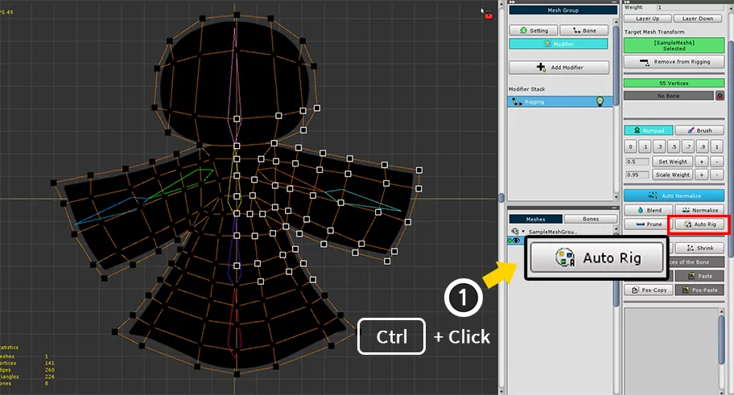
The vertices of the mesh with the Rigging modifier are selected.
(1) Hold down the Ctrl ( Command in Mac OS) and press the Auto Rig button.

A dialog for selecting the bones appears.
1. Search : Search for a name to find a bone.
2. Bone List : You can select the bone to be rigging. You can press the Shift key to select multiple bones.
3. Star icon : Bones that are close to the selected vertices.
4. Select All / Deselect All button : Selects or deselects all bones.
5. Select All Near Bones button : Selects bones close to the selected vertices (bones with star icon).
6. Apply button : Execute the Auto Rig function on the selected bone.
7. Cancel button : Cancel the Auto Rig

Select and apply bones to run Auto Rig.
(1) Press the Select All Near Bones button.
Bones with star icons are selected.

(2) Hold down the Shift and Click to select bones to add or exclude.
(3) Press the Apply button.

Auto Rig has been applied to the selected bones.

You can see that the rigging is different from the result of running Auto Rig without selecting bones.
Note that
When selecting bones and executing the Auto Rig function, the rigging is calculated according to the following features.
- Selected bones are only target of Auto Rig calculation, so not all vertices are always weighted with all selected bones.
- If the vertex is weighted to another bone, the Auto Rig function will be executed including this bone.